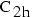
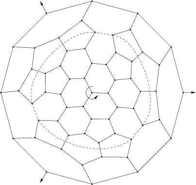
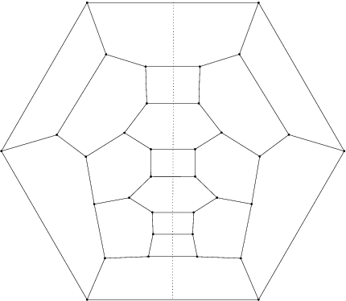

The series  The group is the group generated by a rotation of angle
The group is the group generated by a rotation of angle  around a fixed axis D, and a symmetry on a plane P orthogonal to D.
around a fixed axis D, and a symmetry on a plane P orthogonal to D.
Features
- Algebraic structure: it is Dihedral group of order 2m
- Kind of elements
- 1 element: identity,
- m-1 elements: rotation of angle k with 1<=k<=m-1 around D,
- 1 element: plane symmetry on P,
- m-1 elements: plane symmetry on P composed with rotation of angle k with 1<=k<=m-1 around D
- Particular cases
- if m=1, then the group is

- It has inversion if and only if n is even
- Examples
- First fulleren of symmetry :

- First fulleren of symmetry :

- First 4n of symmetry :

- First 4n of symmetry :